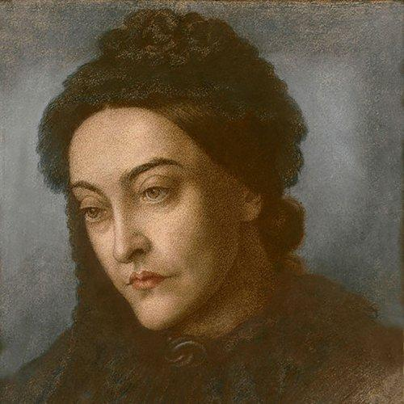
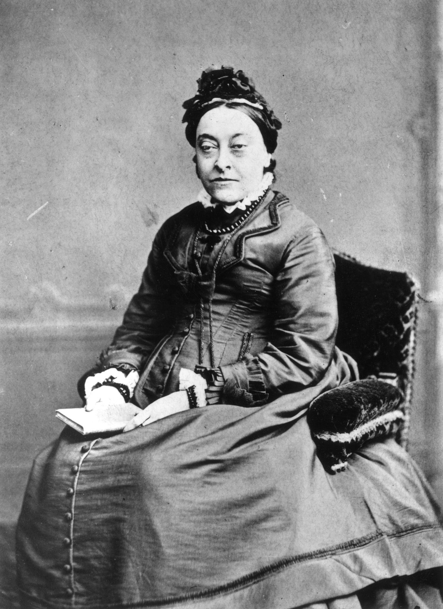
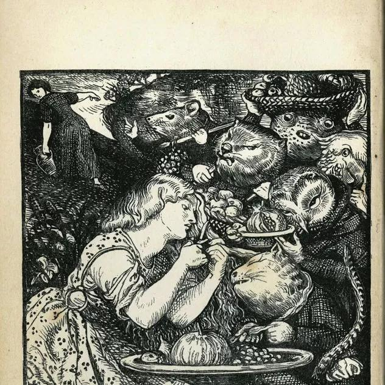

на главную страницу << >> English main page
>> English main page
Кристина Росетти
(Christina Georgina Rossetti, 1830-1894)

Под плющом вздыхают,
Под ивою рыдают.
И под нею и под ним
Скоро умирают.
Я сама своя тюрьма,
Виновата я сама.
Все вокруг поет и пляшет,
Приглашает в хоровод
И удивленно спрашивает:
“Отчего она нейдет?”
И только я гляжу уныло
Не в то что есть, а в то что было.
Перевел Яков Фельдман
Song
When I am dead, my dearest
Когда умру, любимый,
Печальное не пой.
Ни роз, ни кипарисов
Не надо надо мной.
Пусть дождь к земле зелёной
Легко отыщет путь.
И, если хочешь - помни,
А, если нет - забудь.
Я не увижу тени,
Я не услышу дождь,
Ни соловья, в смятеньи
Терзающего ночь.
И в сумерках укромных -
Иначе не назвать -
Я буду сладко помнить
И сладко забывать.
Перевел Яков Фельдман
MARY MAGDALENE
She came in deep repentance
Опустилась коленно-каменно
Перед Богом - и так осталась.
Он вину превращал в раскаянье,
Горечь в сладость.
Разорвала - сняла - отринула
Прежний жемчуг.
Ощутила в груди - горит она -
Огнь зажженный.
Омывала слезами - винами
Ступни Божьи.
Вытирала волос лавиною
Осторожно.
Молодая была, пуховая,
Записная.
Причитала - стезю греховную
Проклинала.
Между ужасом и надеждою
Побрела.
Потеряла дорогу прежнюю -
Иисусову - обрела.
Перевел Яков Фельдман
ВВЕРХ ПО СКЛОНУ
Up-hill
Does the road wind up-hill all the way?
- Дорога всё выше по склону холма?
- Да, именно так.
- Весь день мне скитаться? Я вышел с утра?
- Минет закат.
- Найду ли приют, когда кончится день?
- Уютную крышу, как станет темно.
- Не пропущу ли его в темноте?
- Его миновать никому не дано.
- Я встречу каких-нибудь путников там?
- Всех тех, кто ушёл до тебя.
- Я должен стучать, если дверь заперта?
- Не бойся, откроют, любя.
- Найду ли там отдых, измучен в пути?
Не будет ли тесно?
- Найдётся, естественно, как не найти,
Для каждого место.
Перевел Яков Фельдман
One certainty
Vanity of vanities, the preacher saith
Святой отец сказал: "Всё суета.
Всё прах и тлен. Ни зрению, ни слуху
Не утолить мятущегося духа,
Когда в душе зияет пустота...
Как бы под ветром вялая трава,
Так человек меж страха и надежды
Колеблется. А дух его мятежный
Себя считает слепком с божества...
Как мало счастья знает человек!
Пока он жив - мила ему могила.
Уныла жизнь и смерть его уныла.
И скорбь его сочится из под век...
На старом стебле новые шипы
Появятся, чтобы венок терновый
Сплести опять, когда Спаситель новый
Сойдёт с небес во имя тишины..."
Перевел Яков Фельдман
ENDURANCE
Yes, I too could face death and never shrink
Да, я могла бы Смерти предложить
Стаканчик чая, кресло у огня...
Но надо жить. Бессмыссленно, но жить.
Хотя бы жизнь измучила меня.
Хотя бы жизни каждое звено
Впивалось в плоть галерного раба...
Уснуть нельзя. Забвенья не дано.
Дана страданий долгая судьба.
И нож готов, широк могильный зев,
Особенно в вечерние часы...
Но надо жить, припоминать друзей,
Кормить гусей кусочком колбасы.
Я понимаю важность быстрых дел
И подвигов... Но сколько надо сил,
Чтоб просто жить - как белка в колесе,
Куда тебя Всевышний пригласил.
Ты пригубил заветного вина,
А ты попробуй всё испить, до дна!
Перевел Яков Фельдман
ДРУЗЬЯМ
Go from me, summer friends, and tarry
not
Уходите, летние, не медлите,
Я теперь не летняя, я зимняя,
Глупая овечка неприметная
Средь чертополоха сизо-синего.
Отделитесь рвами и заборами,
Веселитесь, наслаждайтесь золотом,
Чем моими мучиться заботами,
Жаждою моей страдать и голодом.
За высокой высохшей осокою,
За чертополоховым высочеством
Коротаю время, одинокая,
И умру в таком же одиночестве.
Но когда подует ветер с пристани,
Пролетит над брошенными сёлами,
Прежние ко мне приходят призраки,
Летних дней друзья мои весёлые.
Перевел Яков Фельдман
ЭХО
Echo
Come to me in the silence of the night
Приди ко мне в безмолвии ночей!
Приди во сне без видимой причины...
Кругла щека и взгляд красноречивый
Как бы сплетён из солнечных лучей.
Постой! В слезах,
В моих глядящих в прошлое глазах.
О, сладкий сон с горчинкою на дне,
Сулящий рай в грядущем пробужденьи.
Душа к душе в любовном возбужденьи -
Открылась дверь - соединились две.
Замкнулся круг:
Не бойся, не бывает здесь разлук.
Смерть холодна. У смерти на краю
Зову тебя. Я жить хочу сначала,
Чтоб сердце в сердце бешенно стучало,
Дыхания ( - мы были там, в раю -)
Слились в одно...
Но как давно, любимый, как давно...
Перевел Яков Фельдман
ПОМНИ
Remember
Remember me when I am gone away
Помни мя, когда я сгину,
В землю тихую уйду.
Обернуться на ходу
Не успею. Отодвину,
Уберу свою ладонь
Из твоей ладони тёплой.
Зимний дождь течёт по стёклам.
В очаге горит огонь.
Помни, помни, не забудь:
Я сидела в этом кресле.
Слишком поздно что-нибудь
Изменить уже. Но если
Позабудешь на мгновенье -
Не печалься невзначай:
Лучше радость и забвенье,
Но не память и печаль.
Перевел Яков Фельдман
Кто видел ветер?
Ни ты, ни я:
Листьев трепет,
Свежа струя.
Кто видел ветер?
Ни я, ни ты:
Кроны деревьев,
В поле цветы.
Перевел Яков Фельдман
Сонет Сонетов
1
Come to me who wait and watch for you
Приди, вернись! Выглядываю, жду…
А впрочем, нет, что было – миновало.
А новое – нескоро на ходу.
Так редки встречи, так их мало.
А нет тебя – что делаю тогда?
«Когда придет» - я думаю… Сладчайше
Мне это слово сладкое «когда» -
Как мед на дне огромной чаши.
Ты – целый мир. Но как же больно
Стремиться к радости свободно
И боль разлуки знать заране!
Висит надежда, как луна
Из воска белого, бледна,
Между вершинами свиданий.
2
I wish I could remember that first day
Хотела бы я вспомнить первый день,
Тот первый час, то первое мгновенье,
И солнца луч, и ветра дуновенье,
И яркий свет, и кружевную тень.
Но так слепа, наивна я была
В своей наивной радости-печали…
Какие почки в сердце набухали!
А я их, как младенец, проспала…
Ах, кто зимою знает о весне,
Незначимости видимой перечит?
Прикосновенье рук впервые. Нет
Ни пятнышка во мне об этой встрече.
О День из Дней! Пришедший и ушедший
Бесследно так, как тает первый снег.
3
I dream of you to wake: would that I might
Я о тебе мечтаю вечером,
А утром явь такая бледная…
Так улетаю птицы певчие,
Когда пора уходит летняя.
Но ночь для счастья мне дана!
И я бегу от жизни зыбкой
И просыпаюсь ото сна
Озарена твоей улыбкой.
И отдавать и отдаваться!
Лишь в этом вера и богатство.
Но лишь во сне сие со мною…
Не стоит жизнью дорожить.
Приятней умереть, чем жить.
Ничто не ново под луною.
4
I loved you first, but afterwards your love
Я полюбила раньше – ты сильней.
Твоя любовь взлетела выше
И так запела, что не слышно
Голубки ласковой моей.
Друг друга мы совсем не знали,
Воображали, как могли.
Любовь любовью измеряли,
Любовь любовью берегли.
Так чья любовь сильней и дольше?
И кто кому и сколько должен?
Не уточняй, не прекословь.
Когда расчетами оденется,
Когда на Я и Ты поделится,
Тогда и кончится любовь.
5
O my heart’s heart, and you who are to me…
О, сердце сердца моего,
Душа души моей!
Пусть будет Бог всегда с тобой
Во благости своей
Держись всевышнего во всем –
Научит, сохранит,
Умножит радости твои,
Печали утолит.
А мне – любить тебя, мой свет,
И совершенств твоих букет,
И цвет, и глубину.
И исцелять тебя от ран.
Так катит волны Иордан
В пустынную страну.
6
Trust me, I have not earned your dear rebuke…
Поверь, упреков я не заслужила,
За то, что на изломе бытия
Я слишком сильно Господа любила.
Так как тебя. Сильнее, чем тебя.
Я не теряла ни тебя, ни Бога,
(Как Лота непослушная жена.)
Гляжу туда, куда идет дорога.
Я, может быть, люблю вас слишком много,
Обоим вам, избранники, верна.
Из жалобных овец Христова стада
Я, может быть, слабейшая, увы.
Люблю тебя – его не забываю.
Люблю его – но по тебе скучаю.
В любви моей неразделимы вы.
7
Love me, for I love you – and answer me…
Люби меня – как я тебя люблю
Мы – равные в стране любви цветущей.
Среди ветров, отчаянно ревущих,
Есть Дом любви, венчающий скалу.
Тот Дом, тот Замок густонаселен
И там Любовь бытует как Свобода.
Трусливо сердце. Мужественно Слово,
Когда Любовь ведет его с собой.
Так встречи редки, так разлуки часты.
И сердце разрывается на части.
Но в Книге Книг неколебима твердь.
Там сказано, что это было, было.
Что зависть-ревность смрадна как могила.
И что любовь стремительна как смерть.
8
I, if I perish, perish – Esther spake…
Я хотела бы так, как царица Эстер
Положить свою жизнь на весы –
Во всевластии чар, в перекрестии вер,
Во могуществе женской красы.
Белокурые волосы кверху завить
По щекам растереть аромат –
И народу избранному жизнь сохранить -
Он вернется и выстроит Храм.
Голубиную мягкость, и мудрость змеи,
И тончайшего шелка силки…
По закону Любви, и во имя Любви
Помоги мне, Господь, помоги!
9
Think of you, and all that was, and all
Прошлое проходит серой тенью,
Будущее кружится, клубится.
Я так склонна к трусости, к паденью,
К бегству, иногда к самоубийству.
Повернуться к стенке и бессонно
Причитать темно и беспокойно:
Я твоих достоинств недостойна.
Я земного счастья недостойна.
Но не все так пепельно и горько:
Парус сердца, поработав ночь,
Ловит на рассвете два потока -
Бога мощь и человека мощь.
Так позволь же мне сегодня, милый,
На тебя потратить эти силы!
10
Time flies, hope flags, life plies a
wearing wing
Надежда сникла. Время отцвело.
Жизнь уронила серое крыло.
Как носорог или гиппопотам,
За жизнью смерть шагает по пятам.
И только Вера наполняет лица,
Поет и дышит, из вещей лучится,
Пришпоривает землю. Впереди
Летит Любовь. Веселие летит.
Жизнь убывает. Складывает крылья.
Все реже пульс, все призрачней надежда.
Все безнадежней между нами связь.
Может быть уснуть, остановиться?
Подождать, пока растает горечь?
Жизнь вернется, чувство победит?
11
May in aftertimes will say of you
Про тебя расскажут: «он ее любил».
Про меня: «она его любила».
Все равно чужому, кто бы он ни был,
Не понять, как это с нами было.
Мы с тобой расстались, чтобы никогда
Не встречаться, на земле ли, в небе ли.
Было очень больно. Лучше б никогда
Мы с тобой близки друг другу не были.
Мне уже практически стало все равно –
Не темнеет, не стучится бешено.
Знай, что это сердце не защищено,
От тебя ничем не занавешено.
По тропинке жизни до калитки смерти
Я тебя любила больше всех на свете.
12
If there be any one can take my place
Если б там кто-нибудь был, кто мог мое место занять,
Сделать тебя счастливым, кого я изъела скорбью.
Я бы не стала завидовать, жаловаться, пенять,
Наоборот – оставила бы, не пожалев нисколько.
Я бы тебя доверила мудрости, красоте,
Высшему вдохновению, большему благородству.
Я танцевала невестою – благодаря тебе,
Я примеряла корону, радовалась богатству.
Что для тебя удовольствие – удовольствие для меня.
С каждой твоей победой – во мне умиление духа.
Счастье твое свободы освобождает меня.
И если ты в компании – я тоже не одинока.
13
If I could trust my own self with your
fate
Если б я могла тебе довериться,
Я бы лучше доверяла Господу.
Без него корова не отелится,
И кобыла не наестся досыта.
Это он в заливе воду взвешивает
И песок на пляже пересчитывает,
Наши планы палкой перемешивает,
Замыслы сквозь черепа прочитывает.
Всю твою беспомощность описывая,
Все твои сомнения и тонкости,
Доверяю я тебя Всевышнему,
Чтобы он тебе наполнил емкости.
14
Youth gone and beauty gone if ever there
Ах, юность и грация обе покинули это
Лицо, если, впрочем, когда-нибудь в нем обитали.
И свежие розы вплетать в эти кудри едва ли
Придет мне на ум. Ах, блаженство минувшее, где ты?
Щека в своем лучшем румянце. И все-таки стыдно.
Оставьте же юности розы – носители терний.
Цветов не ищите иных – кроме маленьких, верных,
Сокурсников хлеба – банальных, пронзительно синих.
Так что же осталось от юности и от румянца?
Стремление сердца, унылость сносящего трудно,
И тихое слово, которое зреет подспудно,
И сложится в звонкую песню про летнее утро,
Про юность и свежесть из жемчуга и перламутра.
В печальную песню, которую больше не петь нам.
КРИТИК
Sketch
The blindest buzzard that I know
Мой критик серый и унылый -
Слепой канюк, хотя бескрылый.
Его перо всегда в чернилах,
Таких же серых и унылых.
А может быть, он – крот, мой критик?
Под носом он совсем не видит
Из глубины достать спешит,
Что на поверхности лежит.
Богатый опыт, трудный хлеб.
Но как ты глуп! И как ты слеп...
ОТДЫХ
Rest
O Earth, lie heavily upon her eyes
О, Земля! Запечатай веки
Этих сладких усталых глаз.
Нет вопросов и нет ответов.
Стисни тело, чтобы для вздохов
Не осталось места и смехом
Не оскалиться, веселясь.
Что с рождения досаждало –
Отступило и перестало
Сердце дергаться через край,
Тишина – музыкальней песни.
Темнота – словно полдень ясный.
Вот и Рай.
И когда затеплится вечность
У крыльца,
Ты подумаешь -ни начала,
Ни конца.
НИТЬ ЖИЗНИ
The Thread of Life
The irresponsive silence of the land
Безответно молчанье земли,
Безответно рычанье прибоя.
Далеко разошлись мы с тобою,
Далеко-далеко разошлись.
Ты стоишь, одиночеством связан,
Посреди своего чердака.
Кто вернет тебе волю и разум?
Где то сердце? И где та рука?
Иногда я горжусь, вспоминая,
Наши прежние теплые дни.
Иногда я смиренно внимаю,
Как во мне шевелятся они,
Когда радуга золотая
Как надежда светилась в тени.
Перевел Яков Фельдман
  
© 2001 Elena and Yakov Feldman